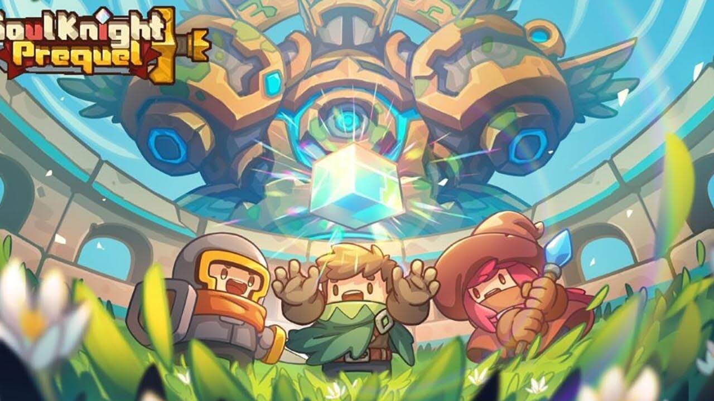

MoMes
Melhores do Dia
Soul Knight Prequel
Melhores Recomendações
Soul Knight Prequel
Descrição: Soul Knight Prequel é um RPG de ação com arte de pixel, com cultivo de saques. Destrua os monstros para aumentar seu poder, ou forme uma equipe para buscar tesouros contra todas as probabilidades. Nosso novo ARPG continua a destacar um grupo familiar de personagens chibi de Soul Knight, enquanto sacia a fome dos fãs por mais conhecimento e missões!
Opinião: Um jogo bem divertido, apesar de precisar de internet gasta bem pouca e te permite jogar com amigos. Possui uma diversidade de builds gigantesca com um sistema de classes bem único e com uma otimização cada vez melhor. Jogo recomendado para quem gosta de ação constante e com liberdade para montar as mais diversas builds.
PostKnight 2
Descrição: Comece a aventura como um entregaleiro em treinamento. Seu único propósito: entregar itens para as pessoas excepcionais que vivem pelo vasto mundo de Prisma! Aventure-se por esse mundo fantástico, repleto de oceanos intermináveis, paisagens escaldantes, prados supercoloridos e montanhas que tocam as nuvens. Apenas o mais valente entre todos vai ter coragem de embarcar nesta aventura e derrotar qualquer monstro que encontrar pelo caminho. Tudo para se tornar o melhor entregaleiro neste RPG de aventura. E você? Vai ter coragem?
Opinião: Um jogo que melhorou muito em comparação ao seu antecessor. Nele você terá uma variedade de builds para seu personagem e irá enfrentar vários inimigos para concluir suas entregas. Em resumo, é extremamente divertido fazer suas entregas e liberar novas vilas além de fazer amizades ao longo de sua jornada. Como brinde ele possui eventos muito divertidos com histórias bem únicas.
Clash Of Clans
Descrição: Junte-se a milhares de jogadores do mundo inteiro: construa sua vila, funde um clã e lute nas Guerras de Clãs épicas! Bárbaros com belos bigodes, Magos com bolas de fogo, outras tropas exclusivas e muito mais! Faça parte do mundo do Clash!
Opinião: Um jogo que apesar de ser bem antigo é muito bom para quem gosta de sentir as mudanças de cada evolução, algo que não é comum nos dias de hoje. Neste jogo você terá uma evolução lenta mas constante e irá sentir bem a diferença de tudo que melhorar ao longo de sua jornada.
Soul Knight
Descrição: "Em uma era de espadas e armas de fogo, as pedra mágica que mantém o equilíbrio do mundo foi roubada por alienígenas tecnologicamente avançados. O mundo está por um fio. Tudo depende da sua capacidade de recuperar a pedra mágica…". Sério, não dá pra ficar inventando essas coisas. Vamos só sair atirando em uns monstros alienígenas mesmo! Este é o jogo que você sempre quis lá no fundo da sua mente. Explore a masmorra, colete armas malucas, desvie de ataques e atire em tudo!
Opinião: Um jogo ja bem antigo mas que continua melhorando cada vez mais até hoje. Possui eventos extremamente criativos e divertidos com recompensas mais únicas ainda. Extremamente viciante, recomendo cuidado ao decidir jogar.
Sobre Nós
MoMes (MObile gaMES) é um site focado em classificar os melhores jogos mobile para te ajudar a escolher os que melhor combinam com você. Aqui nós separamos os melhores jogos de cada categoria tanto pela sua nota como pela nossa própria expêriencia jogando. Tudo isso para que você possa aproveitar apenas dos melhores jogos mobile do mercado.